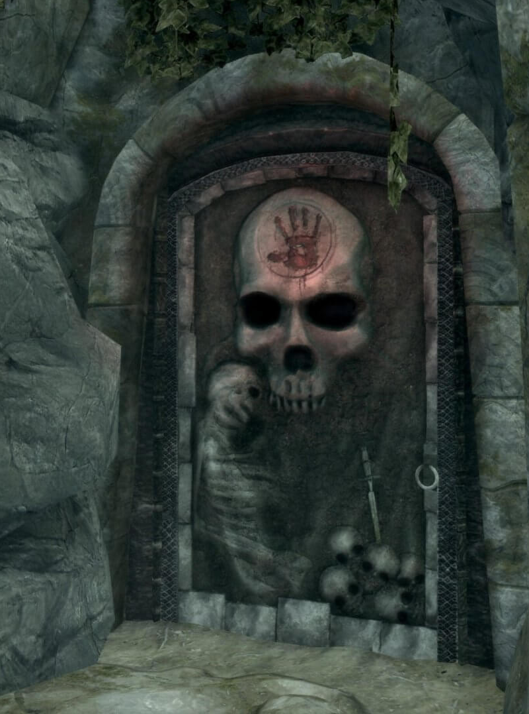
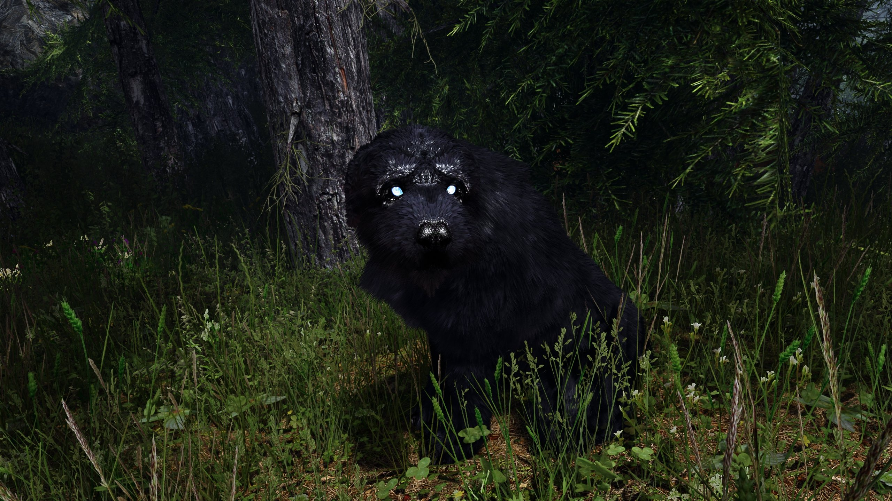

Falkreath Watchtower
Have You Seen This Door?
Residents are reminded to mind their business and stay away from that door no matter what it whispers
Help Wanted
- Mathies is looking for help with the seasons harvest, Septims offered for each plant picked
- A White Stag has been sighted in the wilderness outside the town, such a hunt would be celebrated
- Dengeir has a matter of sensitive importance, should one wish to make some coin, inquire with him at his home
- Siddgeir seeks a bottle of Black Briar Mead, price plus tip will be paid out.
Mysterious Dog Sighted Outside of Town
Residents report a shaggy dog has been sighted wandering around the dark forests surrounding Falkreath Hold.
While there has been no signs of agression from the hound, caution should be taken and attempts should be made to not agitate the hound, including staying away from it should one encounter it during any trips outside the walls.
A New Jarl Takes Control

Jarl Siddgeir, nephew of the former Jarl, Dengeir, has taken over the duties of running Falkreath Hold. Citing the former Jarls advancing age, the new Jarl states it is for the good of the hold that someone with youth and vigor take over and assume the duties of running the hold around us.
The New Jarl is not without controversy, as connections have been made between Siddgeir and a local group of bandits that have been a menace to traders travelling between the Holds, a connection Siddgeir denys vehemently, and says will go to great lengths to prove otherwise.
When asked about opinions regarding the sides to be taken in the civil war currently scourging Skyrim, Siddgeir affirmed support in the Empire against the Stormcloaks who 'Do not understand the price of freedom from Imperial Rule'
It is not certain how well the new Jarl will do at his job, however advisors to the Jarl have reaffirmed that they will attempt to curb any of the Jarls inexperienced tendencies.